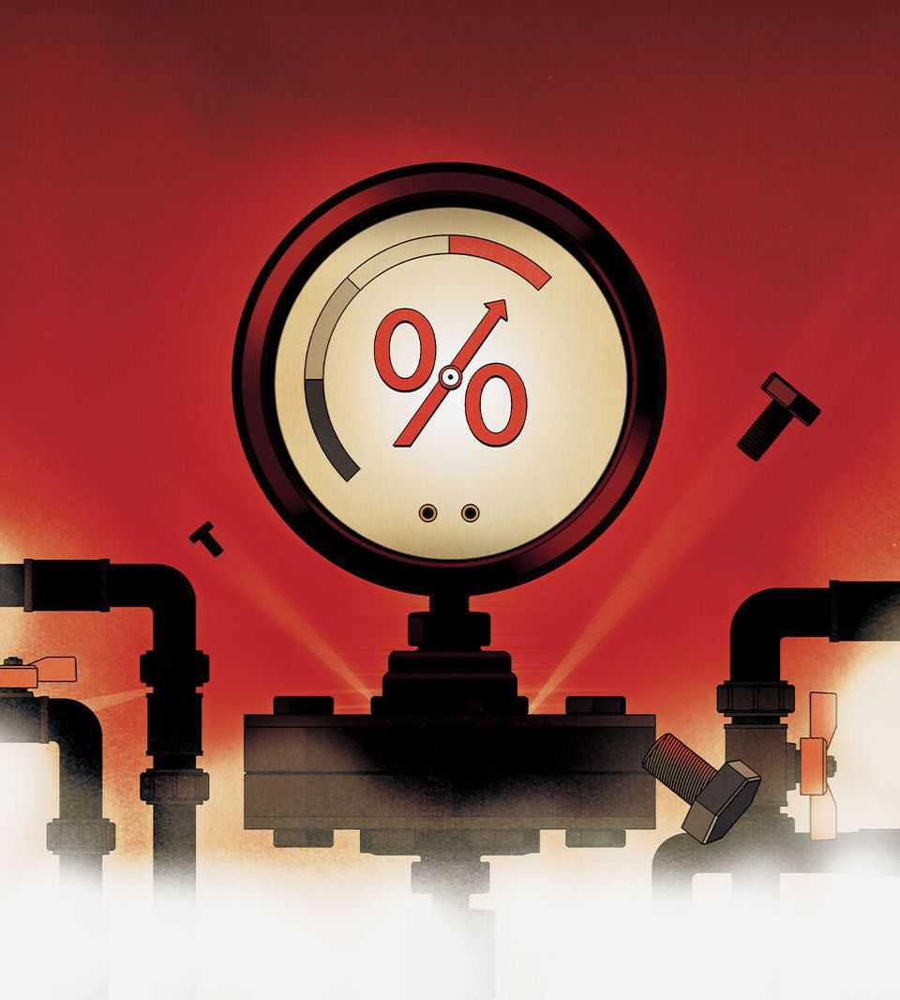
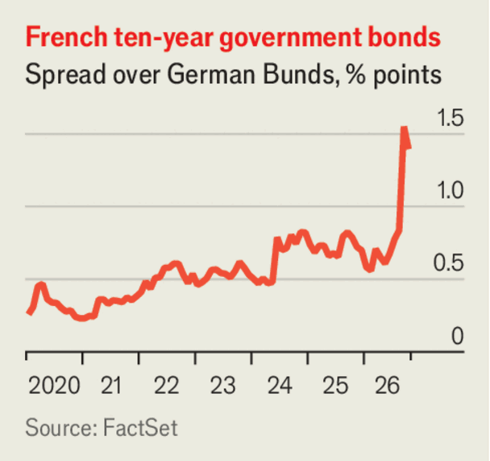

Will bonds blow up?
A government-debt crisis is looming

Oct 8th 2026
Bankers used to say that countries, unlike companies, can’t go bust. They repeated that comforting slogan until a wave of Latin American countries defaulted in the 1980s. Might a similar shock soon puncture the rich world’s hubris?
Five years ago borrowing costs were so low that public debt looked almost costless. Today, with investors dumping their bonds, many big rich-world governments pay more to borrow than at any time since the 1990s or 2000s. Because the public debts of big advanced economies are about double, relative to GDP, what they were at the turn of the century, the result is immense pressure on budgets.
Even before the latest bond sell-off, their governments were forecast to spend 8% of tax revenues on net debt interest this year, as ageing populations and the threat of war are creating pressure to raise spending. Now they must pay still more to refinance their past debts, while many continue to borrow with little restraint. At some point investors will revolt.
Ironically, some of this year’s bond-market sell-off is good news, as we report. America’s economy is booming. Jobless claims are low; economic growth may be running at an annual rate greater than 3%; and productivity growth appears strong. This is encouraging investment. As artificial-intelligence firms clamour to build data centres, they compete with governments for capital in global markets. Higher interest rates are the result.
That has intensified less welcome upward forces on bond yields. The energy shock from the war in Iran has raised inflation, and there are creeping doubts about the credibility of economic institutions in the age of populism. President Donald Trump has recently mused that inflation can reduce debts “very rapidly” and renewed his attacks on the Federal Reserve for failing to cut interest rates. Jean-Luc Mélenchon, a populist-left candidate for the French presidency, has accused the governor of the Bank of France, absurdly, of treason. Bond investors, gazing far into the future, perceive the growing danger that governments will use inflation to pick their pockets.
The immediate impact of the bond-market sell-off varies greatly across countries. America is learning that its AI-fuelled expansion will not much help it cope with its debts, because interest costs rise in tandem with growth. The federal government’s annual budget deficit of about 6% of GDP is unsustainable. Fortunately, Uncle Sam still has the immense advantage of issuing the world’s reserve currency. As bond yields have risen in recent weeks the dollar has soared in value. A fiscal reckoning must eventually come—but not yet.
Japan, another perennial source of worry, is so far coping, too. Its ten-year bond yield has breached 3% for the first time since 1996 and it is planning an ill-advised spending spree. But inflation has risen alongside interest rates. With inflation-adjusted rates still low, and the government’s deficit small, debts are shrinking as a share of the economy. That may change. And if the Japanese begin to sell their enormous stock of overseas assets, financial tremors will rattle the rest of the world. But the Japanese government does not yet face the prospect of a run on its bonds.
Europe is where the danger of a debt crisis looms largest. The AI boom is raising its cost of capital but, in contrast with America, it is enjoying far less of a boost to economic growth. Its energy-importing economy is suffering from high fuel prices, and will suffer more if the winter is cold, owing to a probable global shortage of liquefied natural gas. Though some prudent governments—including those in Germany, Scandinavia and Switzerland—have their budgets in order, Britain, France and Italy are wobbling.
Britain already suffered a bond-market revolt in 2022. Chastened, it corrected course, but its debt-to-GDP ratio is still rising and its politicians specialise in postponing spending cuts, as with a recently promised pension reform. Italy’s net debts are fairly stable, but, at 129% of GDP, too high. It is fragile and could break in a panic.
France is under the greatest pressure. Its budget deficit is forecast to be 5.4% of GDP this year. Given today’s economic growth, The Economist calculates, were France to refinance all its borrowing at current yields on five-year bonds, stabilising its debts would require a belt-tightening of more than 4% of GDP. Yet it is gripped by student protests and its parliament is struggling to pass a budget with cuts worth just a tenth of that.

Investors recently forced France to pay 1.5 points more than Germany to borrow for a decade—the highest spread since the euro-zone debt crisis. Ahead of a presidential election in 2027, Marine Le Pen of the populist-right National Rally party is leading the polls. On October 6th she pledged to trim budgets by 3% of GDP by 2032 and to cut debt to gdp in half. Bond yields fell slightly, but Ms Le Pen lacks credibility. She still vows to lower the retirement age even as lifespans lengthen, thus failing to confront the biggest single item in France’s public spending.
A run on French bonds could happen. If it does, the government might respond not with belt-tightening, but by demanding a bail-out from the European Central Bank (ECB). Countries are supposed to get their budgets in order before the ECB buys their debt, but in practice the guardrail against bail-outs is weaker than a decade ago. In a game of chicken with the ecb, a populist president would probably win; for without France, the European Union could not survive.
It would be a mistake for central banks to bail out governments which refuse point-blank to balance the books. Their job is to unblock financial plumbing, not to underwrite decades of reckless borrowing. If central banks become cash machines for finance ministries, not guarantors of stable prices, long-term bonds will sell off even more. Voters will exact revenge. The best path forward in France and elsewhere is for politicians to explain to their electorates that public debt must be under control, and that together they must do whatever it takes. ■